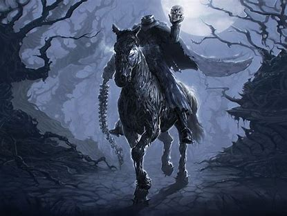
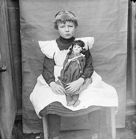

LEYENDAS DEL ESTADO AGUASCALIENTES
meximiedo
¿CUAL ES LA HISTORIA DEL ESTADO Y COMO SURGIO?
El estado de Aguascalientes tiene una historia interesante en cuanto a su surgimiento y evolución. Aquí te la resumo:
- Orígenes Prehispánicos:
Antes de la llegada de los españoles, la región que ahora ocupa el estado de Aguascalientes estaba habitada por diversas culturas indígenas, principalmente grupos chichimecas y guachichiles. Estas culturas vivían de la caza, la pesca y la agricultura en las fértiles tierras cercanas a los ríos y arroyos de la región.
- Colonización Española:
La conquista española llegó a la región de Aguascalientes en el siglo XVI. En 1575, el virrey Martín Enríquez de Almanza otorgó a la localidad de Aguascalientes el título de villa. Este nombre proviene del náhuatl "Aguazcalientes", que significa "aguas calientes", en referencia a las aguas termales presentes en la zona.
- Época Colonial:
Durante la época colonial, Aguascalientes fue un importante centro de producción agrícola y ganadera. La explotación de minas de plata y la producción de alimentos fueron fundamentales para su desarrollo económico. La villa de Aguascalientes creció en importancia y población, atrayendo a colonos españoles y mestizos de otras regiones.
- Independencia y Reforma:
Durante el periodo de la Independencia de México y la posterior Reforma, Aguascalientes tuvo un papel destacado en varios eventos históricos. En 1810, el insurgente José María Morelos y Pavón pasó por Aguascalientes en su camino hacia el sur de México. En 1854, durante la Guerra de Reforma, la ciudad fue escenario de la famosa Convención de Aguascalientes, donde se discutieron importantes temas políticos y se promulgó una Constitución provisional.
- Constitución del Estado:
El 5 de febrero de 1857, se promulgó la primera Constitución Política del Estado Libre y Soberano de Aguascalientes, estableciendo su autonomía política y administrativa dentro de la República Mexicana.
- Siglo XX y Actualidad:
Durante el siglo XX, Aguascalientes experimentó un crecimiento económico significativo, especialmente en la industria automotriz y manufacturera. La capital del estado, Aguascalientes, se convirtió en un importante centro industrial y tecnológico. En la actualidad, el estado de Aguascalientes sigue siendo una entidad próspera y vibrante, con una rica historia y una economía diversificada.
en este estado tan bello y tan lindo que tiene mexico se encuentran algunas leyendas que son especiales en este estado y aqui como les redacto se las voy mencionando y espero que sea de tu agrado las leyendas que te traigo
LA PRIMERA LEYENDA ES DE LA LLORONA DE AGUASCALIENTES
La leyenda de La Llorona es una de las más conocidas en México, y cada región tiene su propia versión. En Aguascalientes, la historia de La Llorona tiene sus propios matices que la hacen única.
Según la tradición oral, en el estado de Aguascalientes se narra la historia de una mujer que vivía en los alrededores de la ciudad, cerca de algún río o arroyo. Esta mujer era conocida por su belleza, pero también por su carácter melancólico y misterioso.
Cuenta la leyenda que esta mujer estaba profundamente enamorada de un hombre, pero su amor no era correspondido. Desesperada y sumida en la tristeza, la mujer decidió tomar una decisión drástica: ahogarse en el río donde solía pasear con su amado.
Desde entonces, se dice que su espíritu atormentado vaga por las orillas del río, lamentando su trágico destino y buscando a su amado perdido. Se la describe como una figura etérea, vestida de blanco y con el rostro cubierto por un velo, que se aparece en las noches de luna llena, llorando desconsoladamente y buscando a sus hijos o a su amado.
Algunas versiones de la leyenda sugieren que La Llorona de Aguascalientes busca a sus hijos, a quienes supuestamente también habría ahogado en un acto de locura producto del desamor. Su lamento se escucha entre los susurros del viento, y su presencia es un presagio de desgracias para aquellos que tienen la desdicha de encontrarla.
Aunque la historia de La Llorona varía en detalles según la región, su mensaje es universal: es una figura que representa el dolor y el sufrimiento causado por el amor no correspondido, así como las consecuencias trágicas de las decisiones impulsivas tomadas en momentos de desesperación.
A CONTINUACION LES MOSTRARE UN ARCHIVO AUDIO VISUAL SOBRE LA LLORONA DE AGUASCALIENTES
LA SEGUNDA LEYENDA ESEL JINETE SIN CABEZA DE SAN BALTORLO
La leyenda del Jinete sin Cabeza de San Bartolo es una de las historias más aterradoras y fascinantes que circulan en el estado de Aguascalientes, específicamente en la comunidad de San Bartolo. Esta leyenda ha sido transmitida de generación en generación, y aunque existen diferentes versiones, la esencia de la historia se mantiene.
- La Leyenda del Jinete sin Cabeza de San Bartolo
Orígenes de la Leyenda
Se dice que hace muchos años, en la comunidad de San Bartolo, vivía un hacendado conocido por su crueldad y su temperamento violento. Era temido por todos los habitantes de la región, ya que castigaba severamente a aquellos que no cumplían con sus órdenes o que se atrevían a desobedecerle. Este hombre solía montar un imponente caballo negro y recorría sus tierras con una presencia intimidante.
- La Tragedia
Una noche, el hacendado descubrió que algunos de sus trabajadores planeaban una rebelión para liberarse de su tiranía. En un arranque de ira, decidió enfrentarlos él mismo, sin esperar refuerzos. Montó su caballo y se dirigió al lugar donde se reunían los rebeldes. Una feroz batalla estalló en la oscuridad de la noche. En medio del caos, el hacendado fue decapitado por uno de los rebeldes. Su cuerpo cayó al suelo, pero su caballo, fiel y entrenado para obedecer sólo a su amo, continuó cabalgando por el campo con el cuerpo sin cabeza.
- La Aparición del Jinete
Desde esa fatídica noche, los habitantes de San Bartolo comenzaron a reportar avistamientos de una figura espectral montada en un caballo negro. Se trataba de un jinete sin cabeza que cabalgaba frenéticamente por los caminos y campos, especialmente durante las noches oscuras y sin luna. Se decía que el jinete buscaba venganza y que su alma no podía descansar en paz debido a su muerte violenta y su vida de crueldad.
- Testimonios de los Lugareños
Muchos lugareños aseguran haber visto al Jinete sin Cabeza de San Bartolo. Algunos cuentan que el espectro aparece en las noches de tormenta, cabalgando a gran velocidad y emitiendo un aura de terror. Otros afirman haber escuchado el sonido de cascos de caballo en medio de la noche, seguido de un frío inexplicable que les eriza la piel. Los más atrevidos que se han cruzado en su camino dicen que la visión del jinete es tan aterradora que paraliza de miedo a cualquiera que lo vea.
- Consecuencias
La leyenda ha infundido un profundo respeto y temor en los habitantes de San Bartolo y sus alrededores. Muchas personas evitan salir de noche y, especialmente, alejarse de los caminos principales para no encontrarse con el jinete espectral. La historia del Jinete sin Cabeza de San Bartolo sirve como un recordatorio de las consecuencias de la tiranía y la violencia, y sigue siendo una parte integral del folklore local de Aguascalientes.
Esta leyenda, como muchas otras en México, refleja la rica tradición oral del país y el profundo arraigo de las historias de fantasmas y espectros en la cultura popular.

A CONTINUACIONES PRESENTARE UN ARCHIVO AUDIO VISUAL DONDE SALE EL JINETE SIN CABEZA
LA TERCERA LEYENDA ESLA NIÑA CON CABEZA DE MUÑECA
La leyenda de "La Niña con Cabeza de Muñeca" es una de las historias más inquietantes y misteriosas de Aguascalientes. Esta leyenda, que ha pasado de generación en generación, combina elementos de lo sobrenatural con el miedo inherente a lo desconocido y lo macabro.
La Leyenda de La Niña con Cabeza de Muñeca
- El Origen de la Leyenda
La historia comienza hace muchos años, en una pequeña comunidad rural de Aguascalientes. Se dice que en este pueblo vivía una familia humilde, cuya única hija era una niña muy querida por todos. La niña, que tenía una gran colección de muñecas, se destacaba por su bondad y dulzura. Su muñeca favorita era una antigua muñeca de porcelana que había pertenecido a su abuela.
- El Trágico Suceso
Una noche, un terrible accidente ocurrió. La casa de la familia se incendió debido a un descuido, y aunque los padres lograron escapar, la niña quedó atrapada en su habitación. Desesperados, los padres intentaron rescatarla, pero las llamas eran demasiado intensas. Cuando finalmente pudieron entrar, encontraron a la niña sin vida, abrazada a su muñeca favorita. El dolor y la culpa llenaron el corazón de los padres, quienes no pudieron superar la pérdida de su hija.
- La Aparición
Poco tiempo después del trágico incidente, los habitantes del pueblo comenzaron a reportar avistamientos de una figura extraña. Se decía que en las noches de luna llena, una pequeña niña con la cabeza de una muñeca de porcelana aparecía caminando por las calles desiertas del pueblo. Los testigos describían la figura como una niña vestida con un vestido antiguo, con una cabeza de muñeca que emitía un brillo inquietante en la oscuridad.
- Los Encuentros
Aquellos que afirmaban haber visto a la niña con cabeza de muñeca describían una experiencia aterradora. La figura aparecía de repente, sin hacer ningún ruido, y se quedaba mirándolos fijamente con los ojos de porcelana de la muñeca. Algunos decían que podían escuchar un suave llanto o susurros de ayuda, lo que aumentaba el miedo y la desesperación. Los más valientes que intentaron acercarse a la figura aseguraban que ésta desaparecía en un instante, dejando sólo el eco de su presencia.
- Consecuencias
La leyenda rápidamente se esparció por todo Aguascalientes, y el miedo a encontrarse con la niña con cabeza de muñeca se convirtió en una advertencia para los niños que se quedaban fuera de casa hasta tarde. Los padres contaban la historia para evitar que sus hijos vagaran por las noches, y los lugareños empezaron a evitar ciertas áreas donde se decía que la niña aparecía con mayor frecuencia.
- Interpretaciones
La leyenda de la niña con cabeza de muñeca es un reflejo del dolor y la culpa que puede acompañar una pérdida trágica. La figura de la niña con la cabeza de muñeca simboliza la inocencia truncada y el vínculo con lo que dejó atrás, en este caso, su muñeca favorita. Es una advertencia sobre la fragilidad de la vida y la importancia de cuidar y proteger a los seres queridos.
Esta historia se ha mantenido viva en la cultura popular de Aguascalientes, y sigue siendo contada en fogatas, reuniones familiares y entre amigos, perpetuando el misterio y el miedo que rodea a la figura de la niña con cabeza de muñeca.
lamentablemente no se puede ver el video de la leyenda de la niña con cabeza de muñeca porque es muy grande y no se puede verlo en el navegador de internet

TOCA PARA REGRESAR A LA PAGINA PRINCIPAL